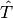
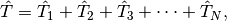
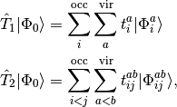
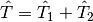
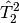
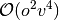
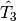
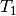
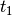
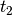

CC: Coupled Cluster Methods¶
Code author: T. Daniel Crawford
Section author: T. Daniel Crawford
Module: Keywords, PSI Variables, CCENERGY
Module: Keywords, PSI Variables, CCEOM
Module: Keywords, PSI Variables, CCRESPONSE
Module: Keywords, PSI Variables, CCTRIPLES
Module: Keywords, PSI Variables, CCDENSITY
The coupled cluster approach is one of the most accurate and reliable quantum chemical techniques for including the effects of electron correlation. Instead of the linear expansion of the wavefunction used by configuation interaction, coupled cluster uses an exponential expansion,
(1)
where the cluster operator  is written as a sum of operators that generate singly-excited, doubly-excited, etc., determinants:

with

etc. The popular coupled cluster singles and doubles (CCSD) model
[Purvis:1982] truncates the expansion at . This model has the same number of parameters as
configuration interaction singles and doubles (CISD) but improves upon
it by approximately accounting for higher-order terms using products
of lower-order terms (e.g., the term  approximately
accounts for quadruple excitations). The inclusion of such products
makes coupled-cluster methods size extensive, meaning that the
quality of the computation should not degrade for larger molecules.
The computational cost for CCSD scales as , where
is the number of occupied orbitals and  is the number of virtual
orbitals.
is the number of virtual
orbitals.
Improving upon CCSD, the CCSD(T) method [Raghavachari:1989] includes
a perturbative estimate of the energy contributed by the 
operator. The computational cost of this additional term scales as
 , making it rather expensive for molecules with more than
a dozen heavy atoms or so. However, when this method is affordable, it
provides very high quality results in most cases.
, making it rather expensive for molecules with more than
a dozen heavy atoms or so. However, when this method is affordable, it
provides very high quality results in most cases.
Psi4 is capable of computing energies and analytic gradients for a number of coupled cluster models. It can also compute linear response properties (such as static or frequency-dependent polarizability, or optical rotation angles) for some models. Excited states can also be computed by the CC2 and CC3 models, or by EOM-CCSD. Table CC Methods summarizes these capabilities. This section describes how to carry out coupled cluster calculations within Psi4. For higher-order coupled-cluster methods like CCSDT and CCSDTQ, Psi4 can interface to Kállay’s MRCC code (see MRCC).
| Method | Reference | Energy | Gradient | Exc. Energies | LR Props |
|---|---|---|---|---|---|
| CC2 | RHF | Y | — | Y | Y |
| UHF | Y | — | N | — | |
| ROHF | Y | — | N | — | |
| CCSD | RHF | Y | Y | Y | Y |
| UHF | Y | Y | Y | — | |
| ROHF | Y | Y | Y | — | |
| CCSD(T) | RHF | Y | — | n/a | n/a |
| UHF | Y | Y | n/a | n/a | |
| ROHF | Y | — | n/a | n/a | |
| CCSD(AT) | RHF | Y | — | n/a | n/a |
| CC3 | RHF | Y | — | Y | — |
| UHF | Y | — | Y | — | |
| ROHF | Y | — | Y | — | |
| CCD | Brueckner | Y | N | N | N |
| CCD(T) | Brueckner | Y | N | n/a | n/a |
The following wavefunctions are currently recognized by Psi4 as arguments
to functions like energy(): 'ccsd', 'ccsd(t)', 'ccsd(at)', 'cc2',
'cc3', 'bccd' (CCD with Brueckner orbitals), 'bccd(t)' (CCD(T) with
Brueckner orbitals), 'eom-ccsd', 'eom-cc2' (CC2 for excited states),
'eom-cc3' (CC3 for excited states). Response properties can be obtained
by calling the function property() (instead of, for example, energy(),
e.g., property('ccsd'). There are many sample
coupled cluster inputs provided in psi4/samples.
Basic Keywords¶
A complete list of keywords related to coupled-cluster computations is provided in the appendices, with the majority of the relevant keywords appearing in Appendix CCENERGY. For a standard ground-state CCSD or CCSD(T) computation, the following keywords are common:
R_CONVERGENCE¶
Convergence criterion for wavefunction (change) in CC amplitude equations.
- Type: conv double
- Default: 1e-7
BRUECKNER_ORBS_R_CONVERGENCE¶
Convergence criterion for Breuckner orbitals. The convergence is determined based on the largest  amplitude. Default adjusts depending on E_CONVERGENCE
- Type: conv double
- Default: 1e-5
RESTART¶
Do restart the coupled-cluster iterations from old  and  amplitudes? For geometry optimizations, Brueckner calculations, etc. the iterative solution of the CC amplitude equations may benefit considerably by reusing old vectors as initial guesses. Assuming that the MO phases remain the same between updates, the CC codes will, by default, re-use old vectors, unless the user sets RESTART = false.
- Type: boolean
- Default: true
CACHELEVEL¶
Cacheing level for libdpd governing the storage of amplitudes, integrals, and intermediates in the CC procedure. A value of 0 retains no quantities in cache, while a level of 6 attempts to store all quantities in cache. For particularly large calculations, a value of 0 may help with certain types of memory problems. The default is 2, which means that all four-index quantites with up to two virtual-orbital indices (e.g., integrals) may be held in the cache.
- Type: integer
- Default: 2
CACHETYPE¶
Selects the priority type for maintaining the automatic memory cache used by the libdpd codes. A value of
LOWselects a “low priority” scheme in which the deletion of items from the cache is based on pre-programmed priorities. A value of LRU selects a “least recently used” scheme in which the oldest item in the cache will be the first one deleted.
- Type: string
- Possible Values: LOW, LRU
- Default: LOW
NUM_AMPS_PRINT¶
Number of important and amplitudes to print
- Type: integer
- Default: 10
MP2_AMPS_PRINT¶
Do print the MP2 amplitudes which are the starting guesses for RHF and UHF reference functions?
- Type: boolean
- Default: false
Larger Calculations¶
Here are a few recommendations for carrying out large-basis-set coupled cluster calculations with Psi4:
- In most cases it is reasonable to set the
memorykeyword to 90% of the available physical memory, at most. There is a small amount of overhead associated with the coupled cluster modules that is not accounted for by the internal CC memory handling routines. Thus, the user should not specify the entire physical memory of the system, or swapping is likely. However, for especially large calculations, it is better to set thememorykeyword to a value less than 16 GB. - Set the CACHELEVEL keyword to
0. This will turn off cacheing, which, for very large calculations, can lead to heap fragmentation and memory faults, even when sufficient physical memory exists. - Set the PRINT keyword to
2. This will help narrow where memory bottlenecks or other errors exist in the event of a crash.
Excited State Coupled Cluster Calculations¶
A complete list of keywords related to coupled cluster linear response is provided in Appendix CCEOM. The most important keywords associated with EOM-CC calculations are:
ROOTS_PER_IRREP¶
Number of excited states per irreducible representation for EOM-CC and CC-LR calculations. Irreps denote the final state symmetry, not the symmetry of the transition.
- Type: array
- Default: No Default
E_CONVERGENCE¶
Convergence criterion for excitation energy (change) in the Davidson algorithm for CC-EOM. See Table Post-SCF Convergence for default convergence criteria for different calculation types.
- Type: conv double
- Default: 1e-6
SINGLES_PRINT¶
Do print information on the iterative solution to the single-excitation EOM-CC problem used as a guess to full EOM-CC?
- Type: boolean
- Default: false
SCHMIDT_ADD_RESIDUAL_TOLERANCE¶
Minimum absolute value above which a guess vector to a root is added to the Davidson algorithm in the EOM-CC iterative procedure.
- Type: conv double
- Default: 1e-3
EOM_GUESS¶
Specifies a set of single-excitation guess vectors for the EOM-CC procedure. If EOM_GUESS =
SINGLES, the guess will be taken from the singles-singles block of the similarity-transformed Hamiltonian, Hbar. If EOM_GUESS =DISK, guess vectors from a previous computation will be read from disk. If EOM_GUESS =INPUT, guess vectors will be specified in user input. The latter method is not currently available.
- Type: string
- Possible Values: SINGLES, DISK, INPUT
- Default: SINGLES
Linear Response (CCLR) Calculations¶
Linear response computations are invoked like property('ccsd')
or property('cc2'), along with a list of requested properties.
A complete list of keywords related to
coupled cluster linear response is provided in Appendix CCRESPONSE.
The most important keywords associated with CC-LR calculations are as follows.
PROPERTY¶
The response property desired. Acceptable values are
POLARIZABILITY(default) for dipole-polarizabilities,ROTATIONfor specific rotations,ROAfor Raman Optical Activity (ROA_TENSORfor each displacement), andALLfor all of the above.
- Type: string
- Possible Values: POLARIZABILITY, ROTATION, ROA, ROA_TENSOR, ALL
- Default: POLARIZABILITY
OMEGA¶
Array that specifies the desired frequencies of the incident radiation field in CCLR calculations. If only one element is given, the units will be assumed to be atomic units. If more than one element is given, then the units must be specified as the final element of the array. Acceptable units are
HZ,NM,EV, andAU.
- Type: array
- Default: No Default
GAUGE¶
Specifies the choice of representation of the electric dipole operator. Acceptable values are
LENGTHfor the usual length-gauge representation,VELOCITYfor the modified velocity-gauge representation in which the static-limit optical rotation tensor is subtracted from the frequency- dependent tensor, orBOTH. Note that, for optical rotation calculations, only the choices ofVELOCITYorBOTHwill yield origin-independent results.
- Type: string
- Possible Values: LENGTH, VELOCITY, BOTH
- Default: LENGTH